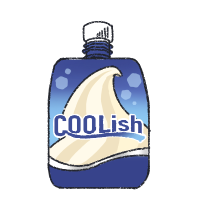
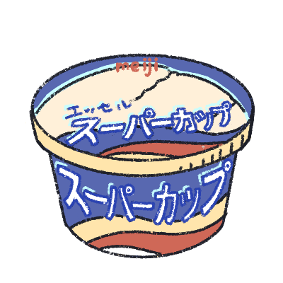
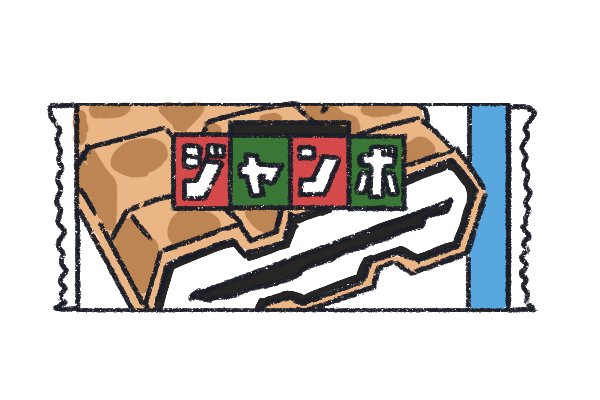
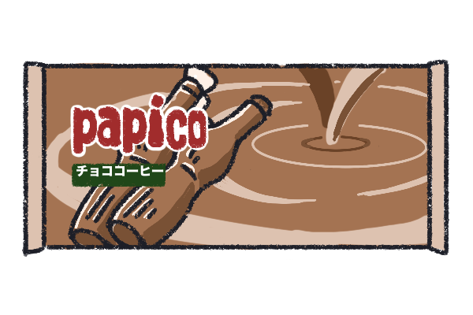

COOLish バニラ
バニラ感☆3.5。
手を汚さず簡単に食べられる。シャーベットのような舌触りで、夏に最適。

スーパーカップ バニラ
王道アイス。ふんわり香る程度のバニラを感じたい人におすすめ！
安い上にボリューミーで尚且つ美味しい！満足感が得られる。

チョコモナカ ジャンボ
王道アイスの一つ。
サクサクモナカとパリパリ板チョコの食感が楽しく、割りやすいので
友達と分けることも可能！

papico
家族や友達とシェアできるのがGOOD!2本入なので、お得感もあり、
食べやすい。
コーヒーが好きな人にもおすすめ!